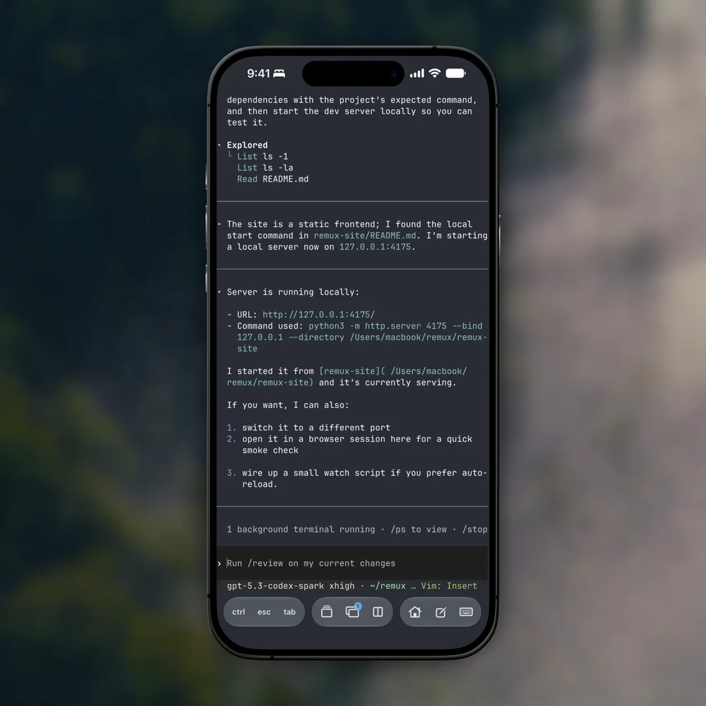

Your tmux workspace, designed for iPhone.
Navigate sessions, preview files and localhost, attach files, and use terminal controls built for touch.

Move through tmux with taps and swipes.
Preview windows and panes, then jump straight in.
- Swipe between windows
- Choose windows and panes from the picker
- Split or close panes


Long-press to preview.
Open files and localhost links from the machine running your session.
- Code, images, PDFs, and HTML
- Hot reload and WebSockets
- Uses the session's machine
Remux previewing the Attention Is All You Need PDF from the server running the
current tmux session.


Terminal controls built for iPhone.
Use modifier keys, saved commands, attachments, and touch gestures that make terminal input easier.
- Long-press and drag to move the cursor
- Run saved commands
- Attach and annotate files


Get Remux.
Available in public beta on TestFlight.
Direct SSH. No Remux account or relay. Credentials stay in the iOS Keychain.